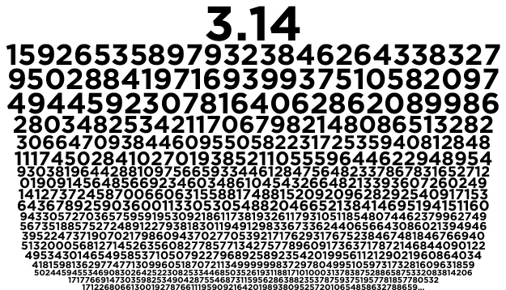

Презентація про число пі

Число Пі (π) — це математична константа, що виражає відношення довжини кола до його діаметра. Воно є ірраціональним числом, тобто його десяткове представлення нескінченне й не періодичне: π ≈ 3.141592653589793… Основні властивості числа π: Використовується в геометрії, тригонометрії, фізиці та багатьох інших науках. Є трансцендентним числом, тобто його неможливо виразити коренем будь-якого алгебраїчного рівняння з раціональними коефіцієнтами. Використовується у формулах для обчислення площі круга (S = πr²) і довжини кола (L = 2πr).
- Цікаві факти:
Не повне число пі
made by print.null bye : D